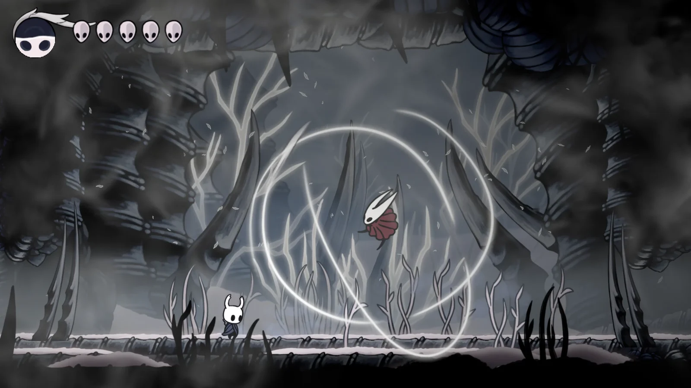

Unity 2D / C#
KnightDemo
从长椅出发，穿过竖井，挑战二见黄蜂女。
2D 动作客户端
非官方学习复刻

王国边缘 · 二见黄蜂女
建议使用电脑浏览器和键盘。
Windows 实机录制 · 56 秒
实机演示
主菜单与设置 → 黄蜂战斗 → 落败回到长椅 → 再次挑战获胜直接打开 MP4 ↗
Unity 2D / C#
从长椅出发，穿过竖井，挑战二见黄蜂女。
2D 动作客户端
非官方学习复刻

王国边缘 · 二见黄蜂女
建议使用电脑浏览器和键盘。
Windows 实机录制 · 56 秒
主菜单与设置 → 黄蜂战斗 → 落败回到长椅 → 再次挑战获胜直接打开 MP4 ↗